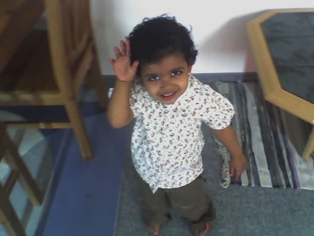
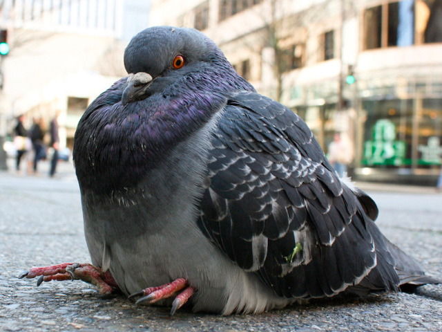
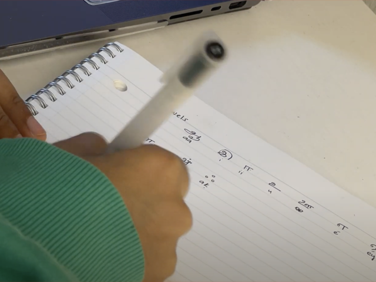
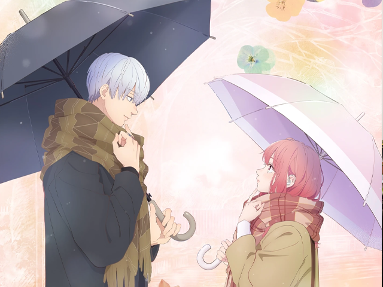

This is me as a baby. Like many others, I was a cheeky little one.
I like saturated colors. Red, Orange and Green are my favorite ones.
I have been listening to this song a lot lately. Give it a listen!
I am a self-proclaimed chai addict. I have to drink 2 cups a day to remain sane.

I love these silly lil birbs.

I like learning languages! It helps me connect better with myself and with others :)
These days, I have been taking walks at the pier to relax. Its super breezy and nice.
These are my grandparents, they're super dear to me!

I like to watch cheesy shoujo anime to wind down. This one, "Yubisaki to renren" is what I am watching now. (It's hella cute)
Welp, I didn't know what to end on, so here is a silly Parisian cat on a melodica for you ૮ ˶ᵔ ᵕ ᵔ˶ ა